6.4. What is Local Search (LS)?
In the toolbox of Operations Research practitioners, Local Search (LS) is very important as it is often the best (and sometimes only) method to solve difficult problems. We start this section by describing what Local Search is and what Local Search methods have in common. Then we discuss their efficiency and compare them with global methods.
Some paragraphs are quite dense, so don’t be scared if you don’t “get it all” after the first reading. With time and practice, the use of Local Search methods will become a second nature.
6.4.1. The basic ingredients
Local Search is a whole bunch of families of (meta-)heuristics[1] that roughly share the following ingredients:
- They start with a solution (feasible or not);
- They improve locally this solution;
- They finish the search when reaching a stopping criterion but usually without any guarantee on the quality of the found solution(s).
We will discuss these three ingredients in details in a moment but before here are some examples of Local Search (meta-)heuristics[2]:
- Tabu Search | (62 100)
- Hill Climbing | (54 300)
- Scatter Search | (5 600)
- Simulated Annealing | (474 000)
- Beam Search | (12 700)
- Particle Swarm Optimization | (74 500)
- Greedy Descent | (263)
- Gradient Search | (16 300)
- Variable Neighbourhood Search | (1 620)
- Guided Local Search | (2 020)
- Genetic Algorithms | (530 000)
- Ant Colony Optimization | (31 100)
- Greedy Adaptive Search Procedure (GRASP)
- ...
and there are a lot more! Most of these methods are quite recent in Research Operations (from the eighties and later on).
Most successful methods take into account their search history to guide the search. Even better - when well implemented - reactive methods[3] learn and adapt themselves during the search. As you might have guessed from the long list of different Local Search (meta-) heuristics, there is no universal solving method[4]. The more insight/knowledge of the structure of your specific problem you gather, the better you can shape your algorithm to solve efficiently your problem.
Let’s discuss the three common ingredients and their implementation in or-tools.
They start with a solution (feasible or not):
To improve locally a solution, you need to start with a solution. In or-tools this solution has to be feasible. You can produce an initial solution and give it to the solver or let the solver find one for you with a DecisionBuilder that you provide the Local Search algorithm with.
What if your problem is to find a feasible solution? You relax the constraints[5] until you can construct a starting solution for that relaxed model. From there, you enforce the relaxed constraints by adding corresponding terms in the objective function (like in a Lagrangian relaxation for instance). It might sound complicated but it really isn’t.
They improve locally this solution:
This is the tricky part to understand. Improvements to the initial solution are done locally. This means that you need to define a neighborhood (explicitly or implicitly) for a given solution and a way to explore this neighborhood. Two solutions can be close (i.e. they belong to the same neighborhood) or very far apart depending on the definition of a neighborhood.
The idea is to (partially or completely) explore a neighborhood around an initial solution, find a good (or the best) solution in this neighborhood and start all over again until a stopping criterion is met.
Let’s denote by 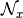 the neighborhood of a solution .
In its very basic form, we could formulate Local Search like this:
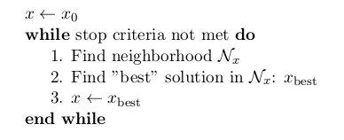Often, steps 1. and 2. are done simultaneously. This is the case in or-tools.
The following figure illustrates this process:
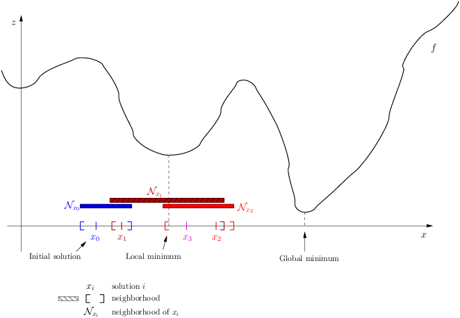This figure depicts a function to minimize. Don’t be fooled by its 2-dimensionality. The -axis represents solutions in a multi-dimensional space. The
 -axis represents a 1-dimensional space with the values
of the objective function .
-axis represents a 1-dimensional space with the values
of the objective function .Let’s zoom in on the neighborhoods and found solutions:
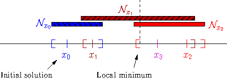The Local Search procedure starts from an initial feasible solution
 and searches the neighborhood
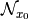 of this solution. The “best” solution found is
and searches the neighborhood
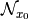 of this solution. The “best” solution found is  . The Local Search procedure
starts over again but with as starting solution. In the neighborhood 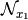, the best solution found is
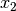. The procedure continues on and on until stopping criteria are met. Let’s say that one of these criteria is
met and the search ends with 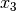. You can see that while the method moves towards the local optima, it
misses it and completely misses the global optimum! This is why the method is called local search: it probably
will find a local optimum (or come close to) but it is unable to find a global optimum (except by chance).
. The Local Search procedure
starts over again but with as starting solution. In the neighborhood 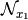, the best solution found is
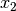. The procedure continues on and on until stopping criteria are met. Let’s say that one of these criteria is
met and the search ends with 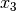. You can see that while the method moves towards the local optima, it
misses it and completely misses the global optimum! This is why the method is called local search: it probably
will find a local optimum (or come close to) but it is unable to find a global optimum (except by chance).If we had continued the search, chances are that our procedure would have iterated around the local optimum. In this case, we say that the Local Search algorithm is trapped by a local optimum. Some LS methods - like Tabu Search - were developed to escape such local optimum but again there is no guarantee whatsoever that they can succeed.
The figure above is very instructive. For instance, you can see that neighborhoods don’t have to be of equal size or centred around a variable
 . You can also see that the relationship “being in the neighborhood of” is
not necessarily symmetric: 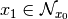 but 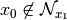[6]!
. You can also see that the relationship “being in the neighborhood of” is
not necessarily symmetric: 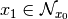 but 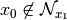[6]!In or-tools, you define a neighborhood by implementing the MakeNextNeighbor() callback method[7] from a LocalSearchOperator: every time this method is called internally by the solver, it constructs one solution of the neighborhood. If you have constructed a successful candidate, make MakeNextNeighbor() returns true. When the whole neighborhood has been visited, make it returns false.
They finish the search when reaching a stopping criterion but usually without any guarantee on the quality of the found solution(s):
Common stopping criteria include:
- time limits:
- for the whole solving process or
- for some parts of the solving process.
- maximum number of steps/iterations:
- maximum number of branches;
- maximum number of failures;
- maximum number of solutions;
- ...
- improvements criteria:
- stop if no improvement for n number of steps/x time;
- stop if gap between estimate of optimal solution and best solution obtained so far is smaller than x;
- ...
These stopping criteria can be further divided in:
- absolute: for instance, a global maximal number of iterations;
- relative: for instance, the improvements are too small with respect to the time, the number of iterations, the number of solutions, ... .
Most of the time, you combine some of these criteria together. You can also update them during the search. In or-tools, stopping criteria are implemented using specialized SearchMonitors: SearchLimits (see the subsection SearchLimits).
- time limits:
What is it with the word meta[8]?
A heuristic is an algorithm that provides a (hopefully) good solution for a given problem. A meta-heuristic is more like a theoretical framework to solve problems: you have to adapt the meta-heuristic to your needs. For instance, Genetic Algorithms use a recombination of parts of solutions (the genes) but for a specific problem, you have to find out what parts of solution you can combine and how you can combine them. A meta-heuristic gives you guidelines to construct your algorithm.
It’s a recipe on how to write a recipe. You have one level of indirection like in meta-programming where you write code to generate code.
6.4.2. Is Local Search efficient?
In two words: yes but...[9]
Let’s dissect this terse answer:
yes:
To really answer this question, you need to know what exactly you mean by “efficient”. If you’re looking for a global optimum then Local Search - at least in its basic form but read the subsection Global optimization methods and Local Search below - is probably not for you. If you are looking for a guarantee on the quality of the solution(s) found, then again you might want to look for another tool.
but...:
Local search methods are strongly dependent on your knowledge of the problem and your ability to use this knowledge during the search. For instance, very often the initial solution plays a crucial role in the efficiency of the Local Search. You might start from a solution that is too far from a global (or local) optimum or worse you start from a solution from which it is impossible to reach a global (or even local) optimum with your neighborhood definition. Several techniques have been proposed to tackle these annoyances. One of them is to restart the search with different initial solutions. Another is to change the definition of a neighborhood during the search like in Variable Neighbourhood Search (VNS).
LS is a tradeoff between efficiency and the fact that LS doesn’t try to find a global optimum, i.e. in other words you are willing to give up the idea of finding a global optimum for the satisfaction to quickly find a (hopefully good) local optimum.
A certain blindness
LS methods are most of the time really blind when they search. Often you hear the analogy between LS methods and descending a hill[10] to find the lowest point in a valley (when we minimize a function). It would be more appropriate to compare LS methods with going down a valley flooded by mist: you don’t see very far in what direction to go to continue downhill. Sometimes you don’t see anything at all and you don’t even know if you are allowed to set a foot in front of you!
6.4.3. What about the quality of the solutions found by Local Search?
Sometimes, we can have some kind of guarantee on the quality of the solutions found and we speak about approximations, sometimes we don’t have a clue of what we are doing and we just hope for the best.
Most of the time, we face two non satisfactory situations:
- a good guarantee is expensive to compute (sometimes as expensive as finding a good solution or even more!);
- a guarantee that isn’t very expensive to compute but that is close to being useless.
In either cases, it is not worth computing this guarantee[11].
Not having a theoretical guarantee on the quality of a solution doesn’t mean that the solution found is not a good solution (it might even be the best solution), just that we don’t know how good (or bad) this solution is!
What do we mean by a guarantee on the solution?
Several concepts of guarantee have been developed. We will not go into details about the concept of guarantee but let’s give an example. In a now famous report [Christofides1976], Christofides proposed and analyzed a heuristic that is guaranteed to solve the metric Travelling Salesman Problem[12] within a 3/2 factor, i.e. no matter the instance, this heuristic will always return a solution whose cost is at most 3/2 times the cost of the optimal solution. This means that in the worst case, the returned solution costs 3/2 times the cost of the optimal solution. This is guaranteed!
6.4.4. Global optimization methods and Local Search
Meta-heuristics and heuristics can also work globally[13]. The challenge with global methods is that very often the global search space for real industrial instances is huge and contains lots of dimensions (sometimes millions or even more!). More often than not, global exact optimization algorithms take prohibitive times to solve such instances. Global (meta-)heuristics cannot dredge the search space too much in details for the same reason.
So, on one hand we can skim through the whole space search but not too much in details and on the other hand we have (very) efficient local methods that (hopefully) lead to local optima. Could we have the best of these two worlds?
You’ve guessed it: we use global methods to find portions of the search space that might contain good or even optimal solutions and we try to find those with Local Search methods. As always, there is a tradeoff between the two.
To take again an analogy[14], looking for a good solution this way is a bit like trying to find crude oil (or nowadays tar sands and the like): you send engineers, geologists, etc. to some places on earth to prospect (global method). If they find a promising spot, you send a team to drill and find out (local method).
Footnotes
| [1] | If the (subtle) difference between meta-heuristics and heuristics escapes you, read the box What is it with the word meta?. |
| [2] | The numbers are the number of results obtained on Google Scholar on August 5, 2012. There isn’t much we can say about those numbers but we though it would be fun to show them. The search for “GRASP” or “Greedy Adaptive Search Procedure” didn’t return any meaningful results. The methods in bold are implemented in or-tools. |
| [3] | See Wikipedia Reactive search optimization or reactive-search.org. |
| [4] | Google No Free Lunch Theorem in optimization to learn more about this. |
| [5] | Relaxing a constraint means that you remove this constraint or weaken it. For instance, you can replace 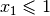 by 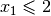. This last constraint is weaker than the first one because it allows more solutions to the problem. Of course, it is preferable to weaken constraints in a meaningful way! |
| [6] | To be fair, we have to mention that most LS methods require this relation to be symmetric as a desirable feature. If this relation is symmetric, we would be to be able to retrace our steps in case of a false start or to explore other possibilities. On the figure, you might think about going left to explore what is past the . |
| [7] | Well almost. The MakeNextNeighbor() callback is really low level and we have alleviated the task by offering other higher level callbacks. See the section Local Search Operators for more details. |
| [8] | See Wikipedia meta for the meaning of the word. |
| [9] | Okay, okay and three more lower dots. |
| [10] | If you’ve never heard this metaphor, skip this paragraph and don’t bother. |
| [11] | Not to mention that some classes of problems are mathematically
proven to have no possible guarantee on their solution at all! (or only if  ). ). |
| [12] | The metric TSP is the classical TSP but on graphs that respect the triangle inequality,
i.e. 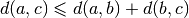 where 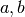 and are nodes of the graph
and 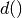 a distance function.
The classical TSP itself cannot be approximated within any constant
factor (unless ). |
| [13] | Tabu Search, Simulated Annealing, Guided Local Search and the like were designed to overcome some shortcomings of Local Search methods. Depending on the problem and how they are implemented, these methods can also be seen as Global Search methods. |
| [14] | As all analogies, this one has certainly its limits! |
Bibliography
| [Christofides1976] | Christofides, Nicos. Worst-case analysis of a new heuristic for the travelling salesman problem, Technical Report, Carnegie Mellon University, 388, 1976. |
Google or-tools |
User's Manual
Google search
Welcome
Tutorial examples
Current chapter
6. Local Search: the Job-Shop Problem
Previous section
Next section
6.5. Basic working of the solver: Local Search